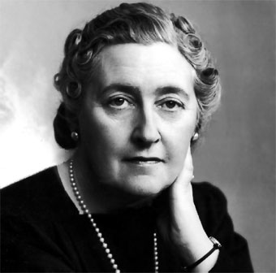
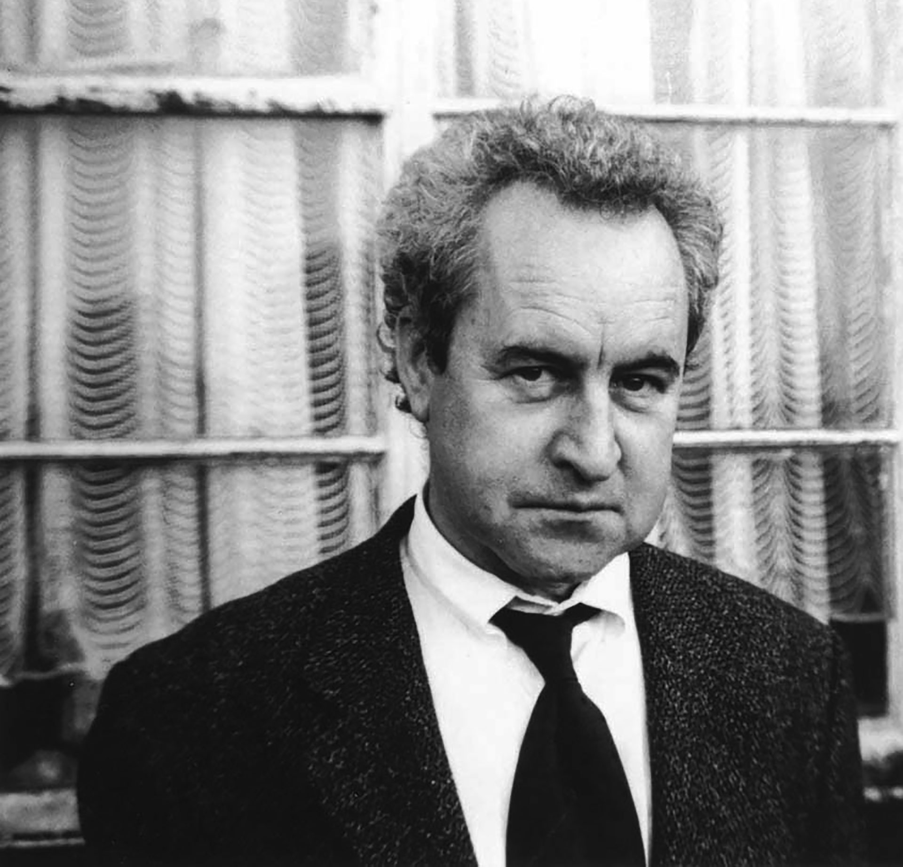

AUTORES PRINCIPALES


En 1840 aparece el detective Auguste Dupin creado por Edgar Alan Poe y con él, comienza el género policíaco. Dupin protagoniza Los crímenes de la calle Morgue, es el primer relato al que podemos llamar policíaco.
La novela negra tiene mucho en común con la novela policíaca. Es un género que nació en el siglo XIX a partir de algunos relatos de Edgar Allan Poe. El objetivo principal de este tipo de novelas es plantear un crimen o suceso en forma de enigma que se debe resolver. Se trata de un relato que gira en torno a crímenes y un detective, pero se aleja de la historia policial clásica porque el detective no es el eje principal de la narración. Normalmente se privilegia a los personajes marginados y a los delincuentes, los cuales utilizan argot coloquial o callejero para expresarse.
La novela negra nació en EE. UU y los padres del género fueron Raymond Chandler y Dashiel Hammett, en cuyas obras se basaron algunas de las películas más representativas del cine negro americano como El halcón maltés o El sueño eterno.La novela negra pretende ser realista. Esto se traduce de forma inmediata en una de las características principales de la novela negra: un estilo de lenguaje propio, una nueva forma de hablar: popular, dura, de la calle.
| |
|
 |
|  |
|
|
.
.
.
.
.
Las primeras obras de literatura llevadas al cine se remontan a los comienzos mismos del cine, con los hermanos Lumière, quienes adaptaron Fausto en 1896.
Existen infinidad de obras "negras" llevadas a la pantalla grande, al ser obras más antiguas y que los jóvenes no conocían, sumado a la decadencia de la literatura en el cine se iban a asegurar un muy buen negocio.
Entre todas estas obras las que más éxito han tenido y las que más destacan son actualmente son:
La saga completa de Sherlock Holmes,
Obras de Agatha Christie, las más Destacadas son "Asesinato en el Orient Express", "Diez negritos", "Muerte en el Nilo" e infinitas otras.
Obras de Sherlock Holmes, las más destacadas son "Las aventuras de Sherlock Holmes", "Sherlock Holmes en Washington", "El perro de los Baskerville" y todas las demás, junto con las de Agatha son las han conseguido mayor éxito.
The Silence of the Lambs , Thomas Harris. Una novela electrizante que ha sabido crear una tensión policiaca y terrorífica en torno a un psiquiatra de genial capacidad. Destaca el canibalismo de sus pacientes y otros que consiga dominar. Dado el éxito inmenso de la novela se han escrito y filmado muchas otras obras
Tom Ripley , Highsmith. Son nada menos que cinco novelas en torno a un huérfano marginal que por azar encuentra la posibilidad de asumir la personalidad de un cretino al que mata.
No Country For Old Men , Cormac McCarthy., Con un final cortante y a la vez abierto que sorprendió a muchos, exactamente igual al de la novela que narra la historia de un buscador de un botín que va asesinando gente con una facilidad pasmosa en un mundo sin escrúpulos en el que él parece no tener nunca sentimiento alguno.